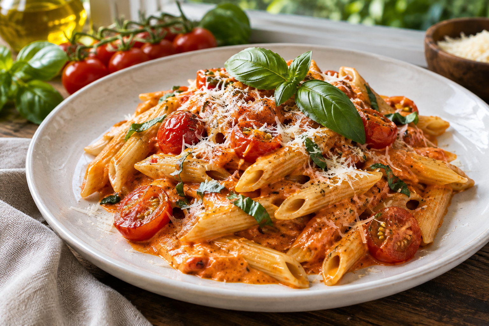

Ужин за 25 минут
Сливочная паста с томатами
Нежный соус, свежий базилик и немного пармезана.
Смотреть рецепт →Найдите идею для завтрака, обеда или ужина. Выберите блюдо, сложность и продукты, которые уже есть дома.
Найти рецепт
Поиск работает по названию и ингредиентам.
Нежный соус, свежий базилик и немного пармезана.
Смотреть рецепт →Хрустящие овощи и лёгкая заправка к обеду.
Смотреть похожий рецепт →Согревающий суп с мягкой текстурой и ароматными специями.
Смотреть похожий рецепт →Ничего не найдено. Попробуйте изменить фильтры.